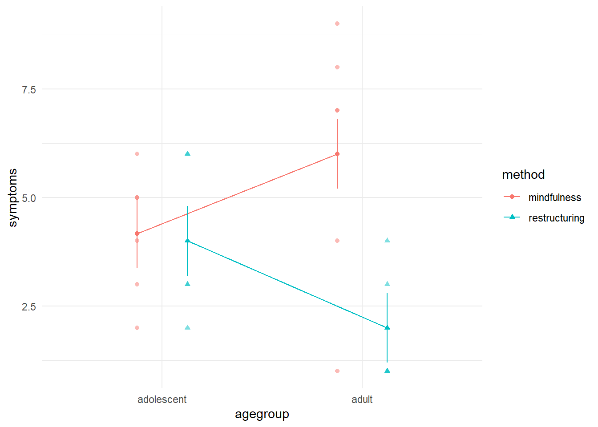

12Zweifaktorielle Varianzanalyse ohne Messwiederholung
12.1 Anwendungsbeispiel in R
Beispiel: Therapiemethoden bei Angstsymptomen für Erwachsene und Jugendliche
In einem fiktiven Experiment wurden zwei verschiedene Therapiemethoden verglichen und untersucht, welchen Effekt die zwei Therapiemethoden bei Jugendlichen und Erwachsenen auf ihre Angstsymptomatik haben. Dazu wurden je 12 erwachsene und 12 jugendliche Personen zufällig auf die zwei Bedingungen aufgeteilt.
Die unabhängige Variable A sind die Altersgruppen mit 2 Faktorstufen (Jugendliche, Erwachsene).
Die unabhängige Variable B sind die Therapiemethoden mit 2 Faktorstufen (Mindfulness, Kognitive Umstrukturierung).
Die abhängige Variable entspricht der Höhe der Angstsymptome nach der Therapie (metrisch).
12.1.1 Planung
Statistische Hypothesen und Signifikanzniveau festlegen
\(H_0\) für Haupteffekt A: Die Angstsymptome unterscheiden sich nicht zwischen den Altersgruppen: \(\mu_{j \bullet} - \mu = 0\) für alle \(j\)
\(H_0\) für Haupteffekt B: Die Angstsymptome unterscheiden sich nicht zwischen den Therapiemethoden: \(\mu_{ \bullet k} - \mu = 0\) für alle \(k\)
\(H_0\) für den Interaktionseffekt A x B: Die Angstsymptome unterscheiden sich nicht zwischen den Therapiemethoden in Abhängigkeit der Altersgruppen: \(\mu_{jk} - (\mu_{j \bullet} - \mu) - (\mu_{ \bullet k} - \mu) + \mu = 0\) für alle \(jk\)
\(H_1\) für den Haupteffekt A (B, A x B analog): Die Altersgruppen unterscheiden sich bezüglich den Angstsymptomen: \(\mu_{j \bullet} - \mu \neq 0\) für mindestens ein \(j\)
Das Alphaniveau wird auf \(5 \%\) festgelegt. Es handelt sich um eine ungerichtete Hypothese, die Testung erfolgt mit dem F-Test dabei einseitig.
12.1.2 Vorverarbeitung
Daten einlesen und vorverarbeiten
Hands-on: Beispieldatensatz Therapiemethode und Altersgruppen
Daten herunterladen und einlesen
Der Datensatz anova_therapy_age.csv kann hier heruntergeladen werden. Der Datensatz muss im data-Ordner des RProject namens anova.Rproj abgespeichert werden.
Es werden folgende Packages verwendet: {tidyverse}, {afex}, {emmeans}, {effectsize}
Datensatz anova_therapy_age.csv einlesen:
# Package ladenlibrary(tidyverse)# Daten laden und anschauend_therapy_age <-read.csv("data/anova_therapy_age.csv") |>glimpse()
Der F-Test für eine zweifaktorielle Varianzanalyse setzt voraus, dass die AV in der Population stetig und normalverteilt ist und die Populationsvarianzen homogen sind.
Die Varianzhomogenität (Homoskedastizität) kann mit dem Levene-Test leveneTest(y ~ x, data = dataset) überprüft werden. Die Funktion leveneTest() stammt aus dem Package {car}. Ein Levene-Test mit \(p < 0.05\) bedeutet, dass der Varianzunterschied signifikant ist. Die Nullhypothese, dass die Varianzen auf Populationsebene identisch sind, müsste in diesem Fall verworfen werden.
# Levene-Test mit dem package {car}car::leveneTest(symptoms ~ agegroup * method, # av ~ uv1 * uv2data = d_therapy_age) # Datensatz
Levene's Test for Homogeneity of Variance (center = median)
Df F value Pr(>F)
group 3 0.6121 0.615
20
Der Test ist hier nicht signifikant (\(p = .615\)), daher wird davon ausgegangen, dass die Varianzen in den Gruppen homogen sind und die Voraussetzung der Varianzhomogenität erfüllt ist.
12.1.3 Analyse
Deskriptivstatistik und Visualisierungen
Für die deskriptive Statistik können die Daten nach Bedingung gruppiert und dann die Kennwerte berechnet werden. Hier werden die Funktionen group_by() und summarise() genutzt. Bei group_by() müssen beide Faktoren angegeben werden.
# Mittelwerte und Standardabweichungen berechnend_summary <- d_therapy_age |>group_by(agegroup, method) |># Gruppierung mit beiden Faktorensummarise(mean_symptoms =mean(symptoms), # Mittelwertsd_symptoms =sd(symptoms)) # Standardabweichung
`summarise()` has grouped output by 'agegroup'. You can override using the
`.groups` argument.
Falls der empirische F-Wert grösser als der kritische F-Wert ist, wird von einem signifikanten Unterschied zwischen mindestens zwei Zellmittelwerten ausgegangen.
Berechnung Teststatistik in R mit der Funktion aov_4()
Eine zweifaktorielle Varianzanalyse kann mit der Funktion aov_4(av ~ uv1 * uv2, + (1 | id), data) aus dem Package {afex} berechnet werden.
av: Abhängige Variable (metrisch)
uv1: Unabhängige Variable A (Bedingung oder Gruppenvariable)
uv2: Unabhängige Variable B (Bedingung oder Gruppenvariable)
(1 | id): Die Funktion benötigt eine Identifikationsvariable (hier id), d.h. eine Variable, in der jede Person einen einzigartigen Wert hat. Da wir keine Messwiederholung haben, wird eine 1 vor dem | verwendet. Bei Messwiederholung wird hier spezifiziert, welche Variable sich innerhalb von id wiederholt.
Es gibt einen signifikanten Haupteffekt B der Therapiemethode (method). Das bedeutet, dass mindestens ein Haupteffekt des Faktors B signifikant von 0 verschieden ist (\(p = .017\)).
Es gibt ausserdem mindestens einen Interaktionseffekt AxB (agegroup * method), der signifikant von 0 verschieden ist (\(p = .027\)).
Es gibt jedoch keinen Haupteffekt A der Altersgruppen (agegroup), da dieser Effekt nicht signifikant von 0 verschieden ist (\(p = .918\)).
Da bei einer zweifaktoriellen Varianzanalyse mit einem 2x2-Design beide Faktoren nur zwei Stufen aufweisen und sich die Effekte zu 0 aufaddieren, bedeutet dies, dass alle Haupteffekte des Faktors B und alle Interaktionseffekte von 0 verschieden sind.
Die Mittelwerte der Bedingungen unterscheiden sich signifikant auf dem \(5 \%\)-Niveau. Die Nullhypothese, wonach sich die Mittelwerte nicht unterscheiden, kann verworfen werden. Die Therapiemethode hat somit einen Einfluss auf die Angstsymptomatik. Bei mehr als zwei Faktorstufen wäre aufgrund der Analyse hingegen (noch) nicht klar, welche Bedingungen sich unterscheiden.
Zur Visualisierung der Ergebnisse eignet sich ein Plot, der die Mittelwerte und Standardfehler abbildet. Dazu kann die Funktion afex_plot aus dem Package {afex} verwendet werden. Um die Standardfehler, anstelle der Konfidenzintervall, anzuzeigen, kann error_ci = FALSE verwendet werden.
Hier ist ersichtlich, dass sich die Zellmittelwerte “nur” in der Altersgruppe “Erwachsene” zwischen den beiden Methoden unterscheidet. Dies deutet darauf hin, dass der Haupteffekt der Therapiemethode lediglich durch die grosse Mittelwertsdifferenz zwischen den beiden Methoden bei Erwachsenen zustande kommt und dass es (trotz signifikantem Haupteffekt) keinen allgemeinen Effekt der Therapiemethode gibt.
Es gilt also Vorsicht bei der Interpretation von Haupteffekten, wenn Interaktionseffekte vorliegen, da grosse Haupteffekte auch durch grosse bedingte Haupteffekt zustande kommen können.
Der Plot kann auch mit Faktor B auf der x-Achse ausgegeben werden.
Hier handelt es sich um die genau gleichen Daten, die aber anders dargestellt werden. Wir sehen aber auch, dass sich Adoleszente (rot) nicht zwischen den Therapiemethoden unterscheiden, bei den Erwachsenen (blau) aber ein Unterschied besteht. Dies kann in einem nächsten Schritt mit weiteren Analysen bestätigt werden, indem die bedingten Haupteffekte berechnet werden.
Bedingte Haupteffekte
Mit der Funktion joint_tests() aus dem Package {emmeans} können die bedingten Haupteffekte berechnet werden. Dies ist sowohl für Faktor A, aber auch für Faktor B möglich und hängt von der Fragestellung ab.
library(emmeans)
Warning: package 'emmeans' was built under R version 4.4.3
Welcome to emmeans.
Caution: You lose important information if you filter this package's results.
See '? untidy'
agegroup = adolescent:
model term df1 df2 F.ratio p.value
method 1 20 0.022 0.8844
agegroup = adult:
model term df1 df2 F.ratio p.value
method 1 20 12.495 0.0021
Der bedingte Haupteffekt des Faktors B (method) (mindfulness vs. restructuring), wenn Personen in der Altersgruppe “Jugendliche” (\(a_2\)) sind, ist nicht signifikant (\(p = .884\)).
Hingegen ist der bedingte Haupteffekt des Faktors B (method) (mindfulness vs. restructuring) signifikant, wenn Personen in der Altersgruppe “Erwachsene” (\(a_1\)) sind (\(p = .002\)).
method = mindfulness:
model term df1 df2 F.ratio p.value
agegroup 1 20 2.625 0.1209
method = restructuring:
model term df1 df2 F.ratio p.value
agegroup 1 20 3.124 0.0924
Die bedingten Haupteffekte des Faktors A (agegroup) (adolescent vs. adult) für beide Therapiemethoden (\(b_1\) und \(b_2\)) sind nicht signifikant.
Gesamteffekt
Um den Gesamteffekt zu berechnen, kann die Funktion lm() verwendet werden. In der letzten Zeile wird der \(p\)-Wert des Gesamteffekts ausgegeben. Dies ist relevant, da bei nicht signifikantem Gesamteffekt die Interpretation der signifikanten Haupt- oder Interaktionseffekte problematisch ist.
# Berechnung des Gesamteffektssummary(lm(symptoms ~ agegroup * method, # av ~ uv1 * uv2data = d_therapy_age)) # Datensatz
Call:
lm(formula = symptoms ~ agegroup * method, data = d_therapy_age)
Residuals:
Min 1Q Median 3Q Max
-5.000 -1.000 0.000 1.208 3.000
Coefficients:
Estimate Std. Error t value Pr(>|t|)
(Intercept) 4.1667 0.8002 5.207 4.28e-05 ***
agegroupadult 1.8333 1.1316 1.620 0.1209
methodrestructuring -0.1667 1.1316 -0.147 0.8844
agegroupadult:methodrestructuring -3.8333 1.6003 -2.395 0.0265 *
---
Signif. codes: 0 '***' 0.001 '**' 0.01 '*' 0.05 '.' 0.1 ' ' 1
Residual standard error: 1.96 on 20 degrees of freedom
Multiple R-squared: 0.3851, Adjusted R-squared: 0.2929
F-statistic: 4.176 on 3 and 20 DF, p-value: 0.01895
Der Gesamteffekt ist mit \(p = .019\) signifikant von 0 verschieden, wodurch die signifikanten Haupt- und Interaktionseffekte grundsätzlich interpretiert werden können.
Effektstärke bestimmen
Berechnung der Effektgrösse \(\eta^2\) und \(\eta^2_p\)
Für jede Effektgruppe lässt sich mit dem nicht-partiellen \(\eta^2\) angeben, wie gross der Anteil der durch sie aufgeklärten Varianz an der Gesamtvarianz ist. Der Nachteil des nicht-partiellen Effektstärkenmasses besteht darin, dass die Grösse eines bestimmten Effekts abhängig davon ist, aus welchen anderen Faktoren das jeweilige varianzanalytische Design besteht. Daher ist es nicht über Studien hinweg vergleichbar.
Zur besseren Vergleichbarkeit kann das partielle \(\eta^2_p\) berechnet werden. Der Nachteil des partiellen Effektstärkemasse ist, dass sie sich innerhalb einer Studie nicht mehr zu einem Gesamteffekt, d. h. dem Anteil der insgesamt aufgeklärten Varianz an der Gesamtvarianz, aufaddieren.
Will man also die Grösse unterschiedlicher Effekte innerhalb der gleichen Studie in Relation zueinander setzen, bietet es sich an, das nicht-partielle Effektstärkemass zu verwenden. Für Vergleiche von Effektgrössen zwischen Studien ist das partielle Effektstärkemass geeignet.
Um die Effektgrössen zu berechnen, kann in R die Funktion eta_squared() aus dem Package {effectsize} verwendet werden. Als Argument für die Funktion muss das Anova-Modell (Objekt), also hier m_anova2x2, verwendet werden. Wird das Argument partial auf TRUE gesetzt (partial = TRUE) berechnet R das partielle Etaquadrat, welches über Studien hinweg verglichen werden kann.
library(effectsize)
Warning: package 'effectsize' was built under R version 4.4.3
eta_squared(m_anova2x2, # Funktion, Modellpartial =FALSE) # nicht-partielles Eta
Die Effektgrösse liegt für den Faktor A (agegroup) bei \(\eta^2_p<.001\), für den Faktor B (method) bei \(\eta^2_p = .25\) und für die Interaktion AxB (agegroup:method) bei \(\eta^2_p=.22\).
Es handelt sich nach der Taxonomie von Cohen (1988) für Therapiemethode und Interaktion um grosse Effekte.
12.1.4 Schlussfolgerungen
Ergebnisse interpretieren und berichten
Ergebnisse der zweifaktoriellen Varianzanalyse ohne Messwiederholung
A two-way analysis of variance (ANOVA) was conducted to examine the effects of Factor A (e.g., age group: adult vs. adolescent) and Factor B (therapy method: mindfulness vs. restructuring) on anxiety symptoms.
The main effect of age group was not significant, F(1, 20) = 0.01, p = .918, suggesting that there was no overall difference in anxiety symptoms between adolescents and adults. The analysis revealed a significant main effect of therapy method, F(1, 20) = 6.78, p = .017, \(\eta^2_p\) = .25, indicating that the mean anxiety symptoms significantly differed between the mindfulness and restructuring method.
However, the interaction between age group and therapy method was significant, F(1, 20) = 5.74, p = .027, \(\eta^2_p\) = .22, indicating that the effect of therapy method depended on age group. A simple effects analysis for therapy method revealed a significant effect for adults (p = .002), but not for adolescents (p = .884). This indicates a differential effect of therapy method regarding age groups. Figure 12.1 illustrates the interaction effect.

Figure 12.1: Main and interaction effects of therapy methods mindfulness and restructuring on anxiety symptoms in adults and adolescents.